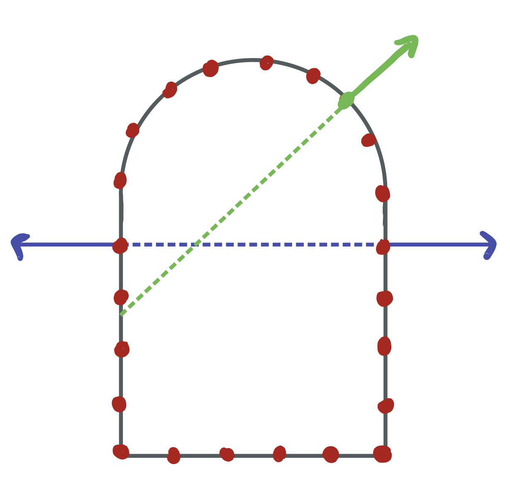
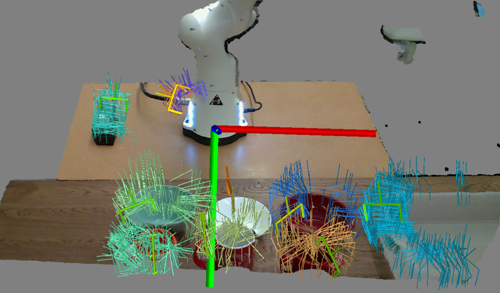
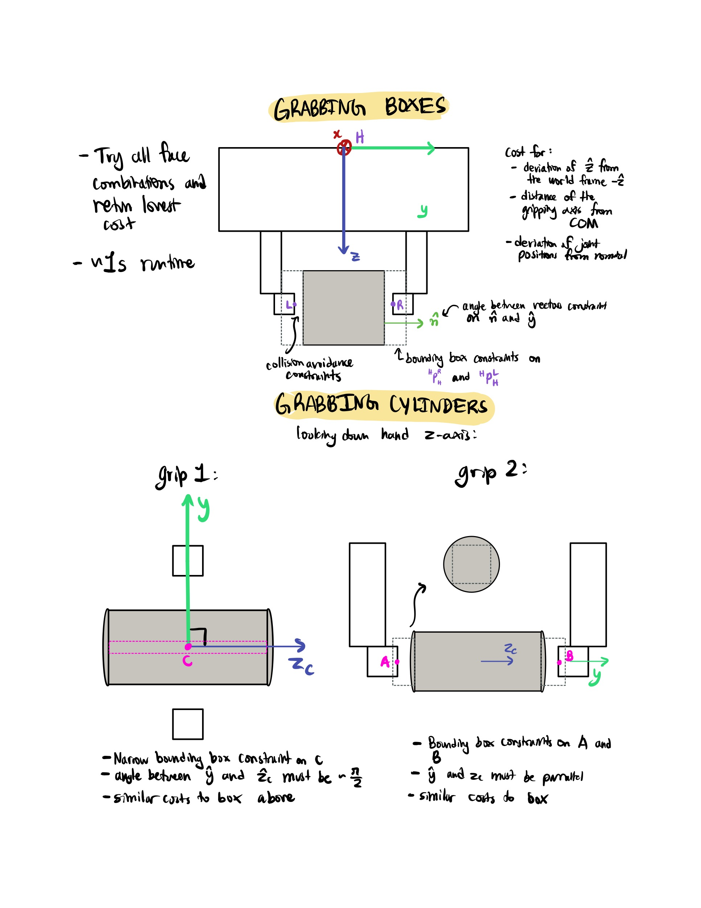
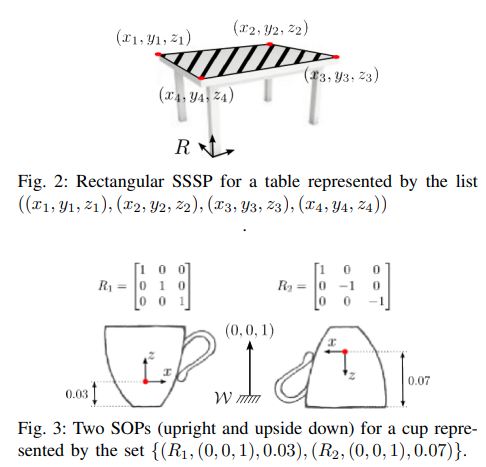
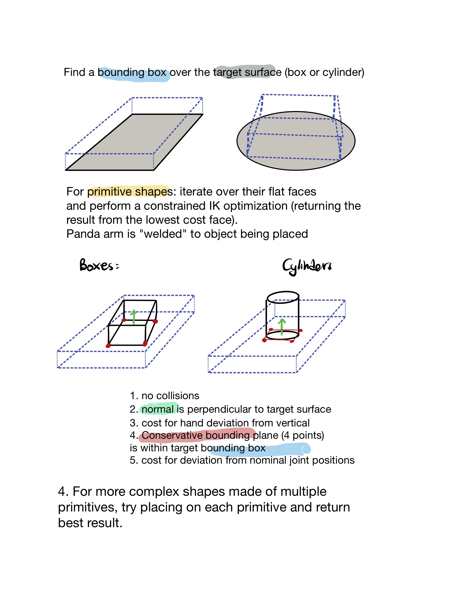
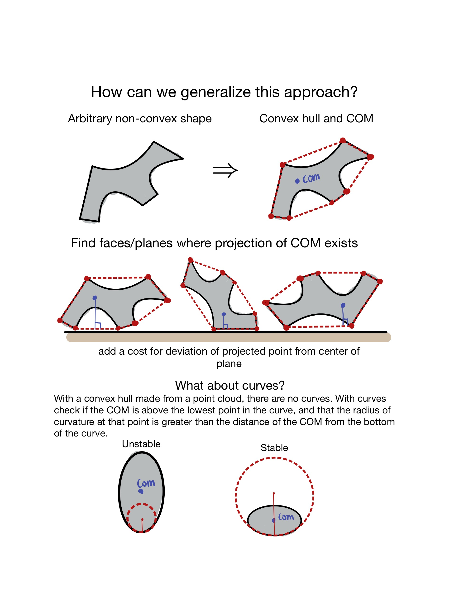

This will contain some rough presentations and visualizations from my work at the RVL lab. It will be continually updated throughout the summer of 2021.
The Github repository for much of this work can be found at BenAgro314/drake_workspace
Weeks 1 and 2
You can find the logs for weeks 1 and 2 here.
- Solving an IK problem with generic task-space constraints
- using SNOPT: Sparse, Nonlinear Optimizer
- sequential quadratic programming which finds iteratively jumps to the local minimum of quadratic approximations
Week 3
-
Controller for Franka Panda arm (very similar to Drake’s ManipulationStation for the Kuka iiwa)
- PID controller (Drake’s InverseDynamicsController class) $$ \tau = k_p (q^d - q) + k_d(\dot{q}^d - \dot{q}) + k_i\int (q^d - q) \; dt$$
- \(k_p, k_d\) and \(k_i\) are position, velocity, and integral gains. I used values for Kuka iiwa, how do we estimate values for real panda?
- Positional control (using state interpolation with discrete derivatives to find velocity) and feed-forward torque control.
- Here is a diagram of the
PandaStationsystem: PandaStation diagram
-
Figured out how to create “welds” during runtime to simulate furniture assembly in Drake.
-
Custom inverse kinematics class
PandaInverseKinematics- Can add custom constraints (e.g optimizing across the entire trajectory instead of pairwise between adjacent IK solutions)
- Avoids some of the pitfalls of adding free bodies in Drake’s InverseKinematics class
- Pitfalls: written using python bindings so it is a bit slower (can always turn into C++ and create out own bindings later)
-
Here is a vide of the Franka Panda completing a basic pick and place with collision avoidance (with a manually coded desired end effector trajectory): (collision avoid pick and place)
-
Rough draft of motion planning via trajectory optimization done, see video: trajectory optimization
- solving the motion planning problem as IK optimization problems connected by splines
- only need to specify start and end points, and the amount of time to get between them
-
Still need to tune the constraints/costs so things look a less janky!
-
Todo:
- Fix collision geometries for panda URDF (see visualization below, panda collisions)
- choosing a motion planning algorithm:
- Motion planning a trajectory optimization
- Sampling based motion planners (RRT*, PRM*)
{kind=link}
Week 4
-
Sampling based motion planning algorithms
- custom implementation of RRT and RRT*
- added OMPL for speed, see video below: ompl pick and place
- specify a desired pick pose \({}^WX^{Pick}_W\) and the place pose \({}^WX^{Place}_W\)
- solve for collision free initial and final joint positions using optimization based inverse kinematics
- Seven dimensional joint space \(\mathcal Q\) is defined by the joint limits
StateValidityCheckerchecks for collisions at sample points
-
Fixed Panda models collisions with drake’s collision filtering:
- in code:
ExcludeCollisionsWithinExcludeCollisionsBetween
- in urdf:
<drake:collision_filter_group name="model_b_group">
- in code:
-
Perception and grasp planning
- Perception is done purely geometrically (ie. no learning)
- Data from three depth cameras per bin is converted to a point-cloud
- Point-clouds are merged at cropped to the space above the pick bin with open3d
- Estimate normals of point-cloud with
open3d.geometry.estimate_normalsandopen3d.geometry.orient_normals_towards_camera_location - Voxelize downsample the point-cloud with
voxelize_down_sample
- Grasp Selection:
- looking for antipodal grasps: grasping the object at a pair of points on the point-cloud with normals co-linear with the line connecting them and with normals in the opposite direction
- Score grasp candidates by
- assessing kinematic feasibility (ie. can the arm reach to that position)
- check if an IK solution can be found
- assessing the normality of the patch of points underneath the gripper fingers
- measure how aligned the normals are with the panda gripper y axis: \(\text{cost} = -\sum_i(n^i_{G_y})^2\), where \(n^i_{G_y}\) is the magnitude of the projection of the \(i^{th}\) normal on the y axis of the gripper.
- no collision constraint: gripper must not penetrate the point-cloud (or any surrounding objects, but this is handled in the IK step)
- assessing kinematic feasibility (ie. can the arm reach to that position)
- Many methods to generate antipodal grasp candidates, here we have simply sample points in the cloud and take the lowest cost
- Perception is done purely geometrically (ie. no learning)

-
Finishing the full-stack pick and place
- Robot knows the static objects in the environment, but only “sees” the manipulands through the point-cloud data from the bins
- Here is a video of a robot stacking two randomly placed blocks, while avoiding collisions with an obstacle : stacking blocks
- Cycles through a pick and place routine:
- Sample until finding a grasp candidate (or reaching a sampling limit)
- Move to prepick position (just above grasp candidate)
- Pick subroutine
- move to grasp position with open gripper
- close gripper while in grasp position
- move back to prepick position
- Move to preplace position (specified in code)
- Place subroutine
- move to place position with closed gripper
- open gripper while in place position
- move back to preplace position
- Back to initial position, and then repeat from step 1
-
Current Challenges and Next Steps
-
Most frequent point of failure: finding valid grasps (inverse kinematics constraint is the most restrictive). I might look into testing/implementing any of:
- AdaGrasp: Learning an Adaptive Gripper-Aware Grasping Policy
- already has a pytorch implementation on github
- Many others:, Visual Pushing and Grasping Toolbox, Real-world Multi-object, Multi-grasp Detection, Contact Grasp-Net
- How do we determine stable placement poses?
- Other areas I can contribute to TAMP?
Week 5
- Learning to grasp

- Ground truth grasping as an optimization problem
- Drake only support collision geometries of three types:
- box
- cylinder
- sphere
- Idea: with the Panda gripper, these shapes can only be grabbed in a few valid ways:
- Solve the inverse kinematics and gripper pose as one constrained optimization problem based on the heuristics for grabbing each type of shape*
- Collision constraints \( \implies \) non-convex \( \implies \) use SNOPT: Sparse Non-Linear Optimizer
- under the hood this does sparse SQP (Sequential Quadratic Programming)
- if the object consists of more than one of these shapes, return the lowest cost grasp for all shapes in that object
- Drake only support collision geometries of three types:

-
Combine these grasp poses with motion planning via OMPL from the previous week and we can pick up most objects (particularly furniture pieces which have relatively simple geometries)
-
Here are links to all of the ycb objects provided with drake, plus some others I made:
-
Next Steps:
- floating Panda hand as an intermediate step between cursor and full arm
- furniture assembly in Drake (simulating welds, building models …)
- motion planning that accounts for objects in the grasp
- closed loop planning that adjusts based on the objects orientation (if it spins)
Week 6
- Finished floating hand
- dealt with some bugs concerning conversion of quaternions to RPY
- Spent some time working on furniture construction in
Drake. This will be a difficult to do because it does not allow for joints to be added mid-simulation, only forces.- in the meantime, Mohamed and I are integrating his work into
Draketo try benchmark TAMP problems (still suitable for enhancement with learning)
- in the meantime, Mohamed and I are integrating his work into
- reading up on TAMP, PDDL, PDDLStream, LGP:
-
Platform-Independent Benchmarks for Task and Motion Planningi (Lagriffoul et al.) and website with problem files. There were some interesting assumptions made in this paper about the types of problems that they cover:
-
“Objects that are grasped or placed are kinematically coupled with the parent object and do not move or slide”. We have already seen that this is not the case in many of the simulations. Below I describe how I made the friction of the Panda hand more realistic, and the grasp poses are optimized so that they are near the COM of the objects.
-
“The initial state is entirely known geometrically (positions, meshes, configurations), semantically (e.g., movability of objects, placement locations)."
-
Predefined surfaces supporting stable placement (SSSP) and stable object poses (SOPs)

. See below for how we can find stable placement poses. -
Task criteria: infeasible task actions, large task spaces, motion/task trade offs (problem can be solved in less steps if grasps and placements are carefully chosen), non-monotonicity (objects need to be moved more than once), non-geometric actions (actions that change the state without the configurations)
- Towers of Hanoi
- Blocks World: stacking blocks in alphabetical order with a obstacle ridden environment
- Sort Clutter: move \( N\) blue blocks from on table to another, \( N \) green blocks in the opposite direction, while avoiding \( 2N \) red blocks that act as obstacles
- Non-Monotonic: moving objects that are blocked by other objects, while returning all blocking objects to their original positions
- Kitchen: preparing a meal by cleaning two glasses (in the dishwasher), cooking food (in the microwave), and setting the table
-
-
An Introduction to the Planning Domain Definition Language (Haslum et al.)
-
Object-Centric Task and Motion Planning in Dynamic Environments (Migimatsu et al.)
- How to generate stable object placement poses?
- as always with
Drake, try and optimization problem!
- as always with


-
using the faces of the convex hull that satisfy the above requirements, we can then perform the same IK optimization problem to find the best reachable placement pose.
-
Demo picking up more complex object made of multiple primitive shapes
-
Todo/Next Steps:
DrakeTAMP (integration with Mohamed’s work)- Improving streams
- placement: implement and test convex hull idea
- grasping: how can we find good initial guess for the IK problem (it is non-convex, so is prey to falling into local minima)
- Continue learning about PDDL(stream) and thinking about where learning could help in the pipeline
- Furniture construction in
Drake
Week 7
-
Lots of re-engineering and re-writing of code
- For software development: take the expected number of time units it will take you, multiply by two and add one.
-
For samplers, injected randomness to the mathematical programs so it aligns with the PDDLstream philosophy
- placement poses were deterministic, so it was impossible to place two items on one table.
- in previous demos, the placement planner had information about the other objects on the table
- solution: add a cost for deviation from a random point on the table and a random orientation
- this IK problem is less constrained than randomly generating positions for the object on the table and solving IK for the (possible) joint configuration
- still would like to try the other method of randomly generating poses for the object, and backing out the joint positions from there
- placement poses were deterministic, so it was impossible to place two items on one table.
-
Demo: specify the goal
goal = (
"and",
("in", "foam_brick", "table_square"),
("in", "soup_can", "table_square"),
("in", "mustard", "table_round"),
)
- Weakness: less specific goals
- consider the goal below:
goal = (
"and",
("in", "foam_brick", "table_square"),
("in", "mustard", "table"),
)
complexity: 2,
cost: 0.000,
evaluations: 60,
iterations: 4,
length: 2,
run_time: 14.630
sample_time: 12.838,
search_time: 1.792,
skeletons: 2,
solutions: 1,
solved: True,
timeout: False
Total External Statistics
External: plan-motion-free | n: 783 | p_success: 1.000 | overhead: 0.155
External: plan-motion-holding | n: 19414 | p_success: 0.121 | overhead: 0.017
External: grasp-conf | n: 583 | p_success: 0.933 | overhead: 1.929
External: placement-conf | n: 597 | p_success: 0.988 | overhead: 5.419
- What if we make this goal less specific?
goal = (
"and",
("in", "foam_brick", "table_square"),
)
complexity: 2,
cost: 0.000,
evaluations: 18228,
iterations: 210,
length: 2,
run_time: 1343.843,
sample_time: 667.892,
search_time: 675.951,
skeletons: 208,
solutions: 1,
solved: True,
timeout: False
Total External Statistics
External: plan-motion-free | n: 723 | p_success: 1.000 | overhead: 0.157
External: plan-motion-holding | n: 19293 | p_success: 0.119 | overhead: 0.016
External: grasp-conf | n: 558 | p_success: 0.930 | overhead: 1.901
External: placement-conf | n: 572 | p_success: 0.988 | overhead: 5.452
-
Notice that the
plan-motion-holdingstream was evaluated a huge number of times. Almost every one of these evaluations was trying to place thefoam_brickon thetable_squarewhile themustardwas already there. -
The grasp and placement streams both have a high probability of success, but they have no information about the objects that the placed object might be in collision with (except the objects welded to the world)
-
While this run may be an outlier (some others I tested were \(\sim 300s \)), the idea is the same: without specifying a goal for the mustard, the planning takes 1-2 orders of magnitude longer.
-
Next Steps/Todo:
- New scenarios/domains?
- Faster streams:
- The slowest part of these streams are the custom costs/constraints I had to add to
Drake’s inverse kinematics API, written inpython. The C++ bindings will find a grasp/placement pose in \(\sim 0.5 s\), while the python code adds a \(10 \times\) slowdown. - This could probably be fixed by writing the code in C++ and creating python bindings
- The slowest part of these streams are the custom costs/constraints I had to add to
- Ideas?
- Learning?
References
- Dai, Hongkai, Gregory Izatt, and Russ Tedrake. 2017. “Global Inverse Kinematics via Mixed-Integer Convex Optimization.” In International Symposium on Robotics Research. doi:10.1007/978-3-030-28619-4_56.
- Garrett, Caelan Reed. 2020. “Integrating Task and Motion Planning Tutorial.” 3rd Summer School on Cognitive Robotics. January 27. http://web.mit.edu/caelan/www/presentations/CRSS19.pdf.
- Garrett, Caelan Reed, Rohan Chitnis, Rachel Holladay, Beomjoon Kim, Tom Silver, Leslie Pack Kaelbling, and Tomás Lozano-Pérez. 2020. “Integrated Task and Motion Planning.” https://arxiv.org/pdf/2010.01083.pdf.
- “GobalInverseKinematics Class Reference.” 2020. Drake. https://drake.mit.edu/doxygen_cxx/classdrake_1_1multibody_1_1_global_inverse_kinematics.html.
- Lee, Youngwoon, Edward S. Hu, Zhengyu Yang, Alex Yin, and Joseph J. Lim. 2019. “IKEA Furniture Assembly Environment for Long-Horizon Complex Manipulation Tasks.”
- Shen, William, Felipe Trevizan, and Sylvie Thiébaux. 2019. “Learning Domain-Independent Planning Heuristics with Hypergraph Networks.” https://arxiv.org/abs/1911.13101.
- Tedrake, Russ. 2021. “Robot Manipulation: Perception, Planning, and Control (Course Notes for Mit 6.881).” http://manipulation.csail.mit.edu/.
- Tedrake, Russ. 2021. “Underactuated Robotics: Algorithms for Walking, Running, Swimming, Flying, and Manipulation (Course Notes for Mit 6.832).” http://underactuated.mit.edu/.
- Tedrake, Russ, and the Drake Development Team. 2019. “Drake: Model-Based Design and Verification for Robotics.” https://drake.mit.edu.
- Yoon, S. W., Alan Fern, and R. Givan. 2006. “Learning Heuristic Functions from Relaxed Plans.” In ICAPS. https://www.aaai.org/Papers/ICAPS/2006/ICAPS06-017.pdf.
- Ioan A. Șucan, Mark Moll, Lydia E. Kavraki, The Open Motion Planning Library, IEEE Robotics & Automation Magazine, 19(4):72–82, December 2012. https://ompl.kavrakilab.org.
- Qian-Yi Zhou, Jaesik Park, Vladlen Koltun, Open3d: A Modern Library For 3D, arXiv, 2018. http://www.open3d.org/.
- Xu, Zhenjia and Qi, Beichun and Agrawal, Shubham and Song, Shuran. "AdaGrasp: Learning an Adaptive Gripper-Aware Grasping Policy", Proceedings of the IEEE International Conference on Robotics and Automation, 2021. https://adagrasp.cs.columbia.edu/.
- Martin Sundermeyer, Arsalan Mousavian, Rudolph Triebel and Dieter Fox. Contact-GraspNet: Efficient 6-DoF Grasp Generation in Cluttered Scenes. 2021. https://arxiv.org/abs/2103.14127
- Arsalan Mousavian, Clemens Eppner and Dieter Fox. 6-DOF GraspNet: Variational Grasp Generation for Object Manipulation. 2019. https://arxiv.org/abs/1905.10520